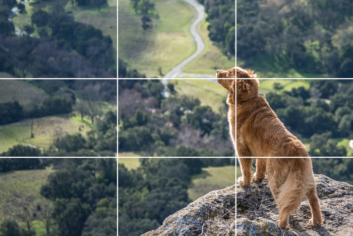
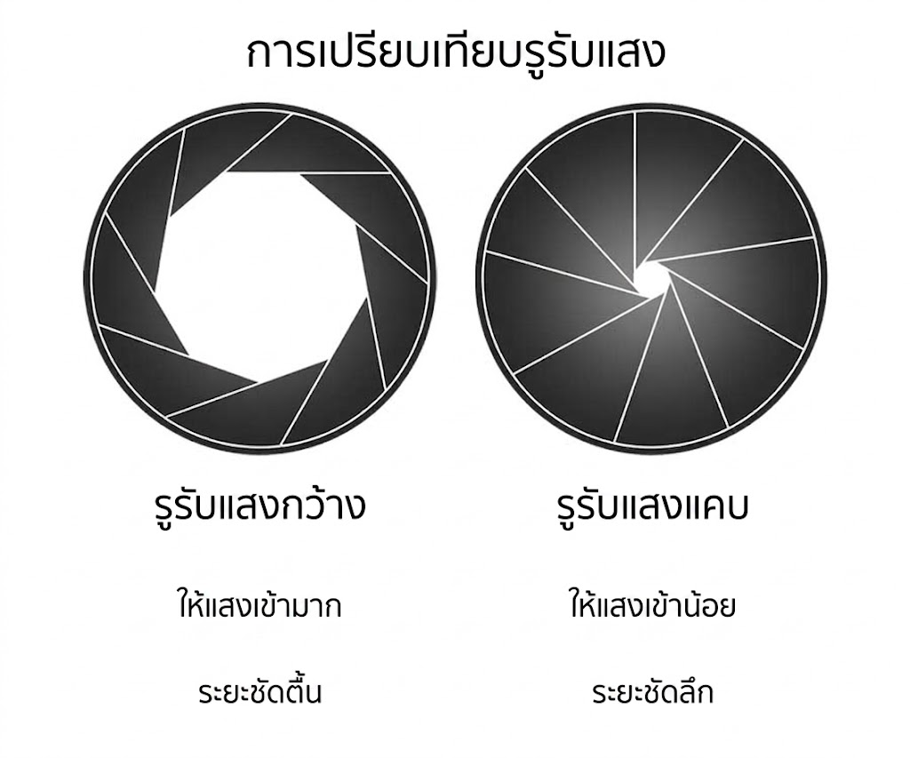
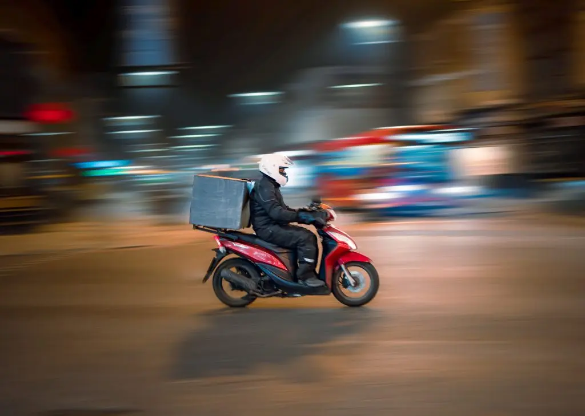
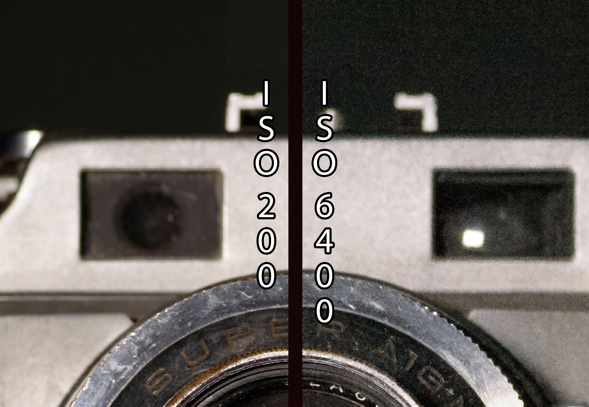
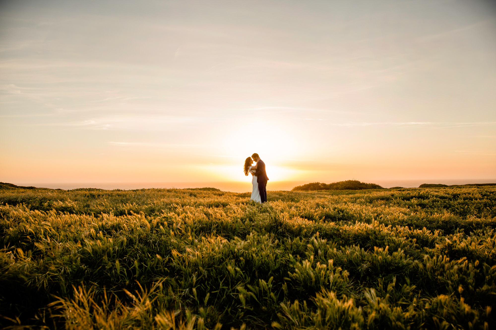

เทคนิค
เรียนรู้หลักการจัดองค์ประกอบและเทคนิคการตั้งค่ากล้อง เพื่อยกระดับภาพถ่ายของคุณให้ดูเป็นมืออาชีพ

1. กฎสามส่วน (Rule of Thirds)
กฎสามส่วนเป็นเทคนิคพื้นฐานในการจัดองค์ประกอบภาพ โดยแบ่งภาพออกเป็น 9 ส่วนเท่าๆ กันด้วยเส้นสมมติแนวนอน 2 เส้นและแนวตั้ง 2 เส้น จุดตัดทั้ง 4 จุดที่เกิดขึ้นคือตำแหน่งที่เหมาะสมที่สุดในการวางจุดสนใจหลักของภาพ การวางวัตถุหลักไว้ที่จุดตัดเหล่านี้แทนการวางไว้ตรงกลางภาพจะช่วยให้ภาพดูเป็นธรรมชาติ มีความสมดุล และดึงดูดสายตาผู้ชมได้ดีขึ้น กล้องดิจิทัลและสมาร์ทโฟนส่วนใหญ่มีฟังก์ชันแสดงเส้นตาราง (Grid) เพื่อช่วยให้ผู้ถ่ายภาพสามารถกะระยะและจัดองค์ประกอบตามกฎสามส่วนได้ง่ายขึ้น

2. การควบคุมรูรับแสง (Aperture)
รูรับแสงคือช่องที่ยอมให้แสงผ่านเข้าไปยังเซ็นเซอร์รับภาพของกล้อง การปรับขนาดรูรับแสงนอกจากจะควบคุมปริมาณแสงแล้ว ยังส่งผลโดยตรงต่อความชัดลึก (Depth of Field) ของภาพ รูรับแสงกว้าง (ค่า f-stop ต่ำ เช่น f/1.8) จะทำให้ฉากหลังเบลอ เหมาะสำหรับการถ่ายภาพบุคคลหรือวัตถุที่ต้องการให้โดดเด่นออกจากฉากหลัง ในขณะที่รูรับแสงแคบ (ค่า f-stop สูง เช่น f/8 หรือ f/11) จะทำให้ภาพมีความคมชัดตั้งแต่ฉากหน้าไปจนถึงฉากหลัง ซึ่งเหมาะสำหรับการถ่ายภาพทิวทัศน์ที่ต้องการเก็บรายละเอียดทั้งหมด

3. การตั้งค่าความเร็วชัตเตอร์ (Shutter Speed)
ความเร็วชัตเตอร์คือระยะเวลาที่ม่านชัตเตอร์เปิดให้แสงตกลงบนเซ็นเซอร์ การเลือกใช้ความเร็วชัตเตอร์ที่เหมาะสมขึ้นอยู่กับการเคลื่อนไหวของวัตถุ ความเร็วชัตเตอร์สูง (เช่น 1/1000 วินาที) สามารถหยุดการเคลื่อนไหวที่รวดเร็วได้สนิท เหมาะสำหรับการถ่ายภาพกีฬาหรือสัตว์ป่า ในทางกลับกัน ความเร็วชัตเตอร์ต่ำ (เช่น 1/30 วินาที หรือช้ากว่านั้น) จะทำให้เกิดการเบลอของการเคลื่อนไหว (Motion Blur) ซึ่งนิยมใช้ในการถ่ายภาพน้ำตกให้ดูนุ่มนวล หรือการถ่ายภาพเส้นแสงไฟรถยนต์ในเวลากลางคืน โดยจำเป็นต้องใช้ขาตั้งกล้องเพื่อป้องกันภาพสั่นไหว

4. การทำความเข้าใจค่าความไวแสง (ISO)
ISO คือค่าความไวต่อแสงของเซ็นเซอร์กล้อง การตั้งค่า ISO ต่ำ (เช่น ISO 100 หรือ 200) เหมาะสำหรับการถ่ายภาพในสภาพแสงที่มีความสว่างเพียงพอ เช่น เวลากลางวันกลางแจ้ง โดยจะให้ภาพที่มีความคมชัดและมีจุดสีรบกวน (Noise) น้อยที่สุด เมื่อถ่ายภาพในที่แสงน้อย การเพิ่มค่า ISO จะช่วยให้ภาพสว่างขึ้นโดยไม่ต้องลดความเร็วชัตเตอร์ลงมากนัก แต่ข้อควรระวังคือการใช้ค่า ISO ที่สูงเกินไปจะทำให้เกิดจุดสีรบกวนในภาพมากขึ้น ซึ่งอาจส่งผลต่อคุณภาพและความคมชัดของภาพโดยรวม

5. ทิศทางและคุณภาพของแสง (Lighting)
แสงคือองค์ประกอบที่สำคัญที่สุดในการถ่ายภาพ การทำความเข้าใจทิศทางและคุณภาพของแสงจะช่วยยกระดับภาพถ่ายได้อย่างมาก แสงที่ส่องมาจากด้านหน้าจะให้ความสว่างที่สม่ำเสมอแต่อาจทำให้ภาพดูแบน แสงด้านข้างช่วยสร้างมิติและเงาที่ทำให้วัตถุดูมีรูปทรงชัดเจน ส่วนแสงสว่างจากด้านหลัง (Backlight) สามารถสร้างภาพเงาดำ (Silhouette) หรือประกายแสงที่สวยงาม นอกจากนี้ แสงในช่วงเช้าตรู่หรือช่วงเย็น (Golden Hour) จะมีความนุ่มนวลและมีสีทองอบอุ่น ซึ่งถือเป็นช่วงเวลาที่ช่างภาพนิยมใช้ในการถ่ายภาพมากที่สุด
โหมดการถ่ายภาพพื้นฐาน
ทำความรู้จักกับโหมดกล้องที่สำคัญบนแป้นหมุนเพื่อควบคุมภาพถ่ายอย่างมืออาชีพ
โหมด P
(Program Auto)กล้องจะคำนวณความเร็วชัตเตอร์และรูรับแสงให้โดยอัตโนมัติ แต่เปิดโอกาสให้ผู้ถ่ายปรับค่า ISO และ White Balance ได้เอง เหมาะสำหรับการถ่ายภาพทั่วไปที่ต้องการความรวดเร็วและไม่อยากพะวงกับการตั้งค่าแสง
โหมด A / Av
(Aperture Priority)ผู้ถ่ายเป็นผู้กำหนดค่ารูรับแสง (f-stop) และกล้องจะคำนวณความเร็วชัตเตอร์ให้เหมาะสม เป็นโหมดที่นิยมมากที่สุดในการควบคุมระยะความชัดลึก เช่น การถ่ายภาพบุคคลแบบหน้าชัดหลังเบลอ
โหมด S / Tv
(Shutter Priority)ผู้ถ่ายเป็นผู้กำหนดความเร็วชัตเตอร์ และกล้องจะคำนวณรูรับแสงให้โดยอัตโนมัติ เหมาะสำหรับการถ่ายภาพที่ต้องการจับภาพการเคลื่อนไหว เช่น กีฬา นกบิน หรือการถ่ายสายน้ำให้ดูพลิ้วไหว
โหมด M
(Manual)ผู้ถ่ายควบคุมการตั้งค่าเองทั้งหมด ทั้งรูรับแสง ความเร็วชัตเตอร์ และ ISO ทำให้สามารถสร้างสรรค์ภาพถ่ายและควบคุมปริมาณแสงในสถานการณ์ที่สภาพแสงซับซ้อนได้อย่างอิสระ 100%
โหมดสำเร็จรูป (Scene Modes)
โหมดเฉพาะสถานการณ์ ช่วยให้มือใหม่ได้ภาพที่สวยงามอย่างรวดเร็ว
บุคคล (Portrait)
กล้องจะปรับรูรับแสงให้กว้างขึ้นเพื่อละลายฉากหลัง (หน้าชัดหลังเบลอ) ทำให้ตัวแบบโดดเด่น และมักจะปรับโทนสีผิวให้ดูนุ่มนวลเป็นธรรมชาติ
ทิวทัศน์ (Landscape)
กล้องจะใช้รูรับแสงแคบเพื่อให้ภาพมีความคมชัดลึกตั้งแต่ฉากหน้าไปจนถึงเส้นขอบฟ้า พร้อมทั้งดึงสีฟ้าและสีเขียวให้ดูสดใสยิ่งขึ้น
มาโคร (Macro)
สำหรับถ่ายภาพวัตถุขนาดเล็กในระยะประชิด เช่น ดอกไม้ แมลง กล้องจะปรับระยะโฟกัสใกล้สุดและคำนวณแสงเพื่อเก็บรายละเอียดเล็กๆ ให้คมชัด
กีฬา (Sports/Action)
กล้องจะดันความเร็วชัตเตอร์ให้สูงมากเพื่อหยุดการเคลื่อนไหวไม่ให้เบลอ และมักจะปรับระบบโฟกัสเป็นการติดตามวัตถุอย่างต่อเนื่อง
กลางคืน (Night Portrait)
กล้องจะลดความเร็วชัตเตอร์ลงเพื่อเก็บแสงบรรยากาศด้านหลัง และจะยิงแฟลชเพื่อส่องสว่างตัวบุคคลด้านหน้า (ควรใช้ร่วมกับขาตั้งกล้อง)
อัตโนมัติ (Auto)
กล้องจะวิเคราะห์ฉากหน้าและเลือกการตั้งค่ารวมถึงโหมดที่เหมาะสมที่สุดให้โดยอัตโนมัติ เป็นโหมดที่ง่ายและรวดเร็วที่สุดสำหรับผู้เริ่มต้น
สามเหลี่ยมแสง (Exposure Triangle)
ความสัมพันธ์ของ 3 ตัวแปรหลักที่ทำงานร่วมกันเพื่อควบคุม "ความสว่าง" (Exposure) ของภาพ หากคุณปรับค่าใดค่าหนึ่ง คุณจะต้องปรับค่าอื่นๆ เพื่อชดเชยแสงให้ภาพยังคงสมดุล
รูรับแสง (Aperture)
ควบคุม: ปริมาณแสง และ ความชัดลึก (Depth of Field)
ผลกระทบ: หากเปิดรูรับแสงกว้างขึ้น แสงจะเข้ามากขึ้น แต่ฉากหลังจะละลายเบลอ หากบีบรูรับแสงแคบลง ภาพจะชัดลึกแต่แสงจะเข้าน้อยลง
ชัตเตอร์ (Shutter Speed)
ควบคุม: ระยะเวลาที่แสงเข้า และ การหยุดความเคลื่อนไหว
ผลกระทบ: หากใช้สปีดชัตเตอร์สูง แสงจะเข้าน้อยลงแต่หยุดวัตถุที่เคลื่อนไหวเร็วๆ ได้สนิท หากสปีดชัตเตอร์ต่ำ แสงจะเข้ามากขึ้น แต่อาจเบลอจากการสั่นไหว
ความไวแสง (ISO)
ควบคุม: ความไวต่อแสงของเซ็นเซอร์ และ สัญญาณรบกวน (Noise)
ผลกระทบ: เพิ่มค่า ISO จะรับแสงได้ดีขึ้นในที่มืด ช่วยให้ใช้สปีดชัตเตอร์สูงได้ แต่จะแลกมาด้วยจุดสีรบกวน (Noise) ที่ทำให้ภาพลดความเนียนใสลง